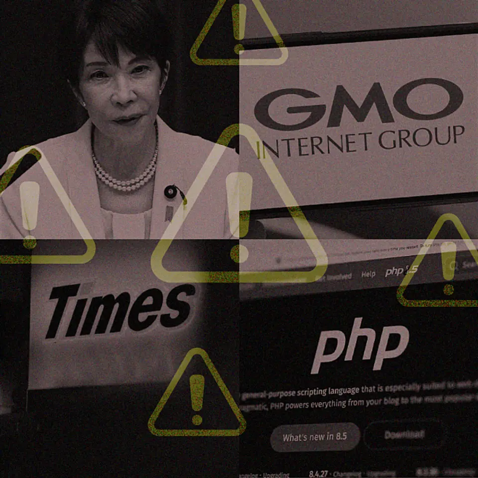
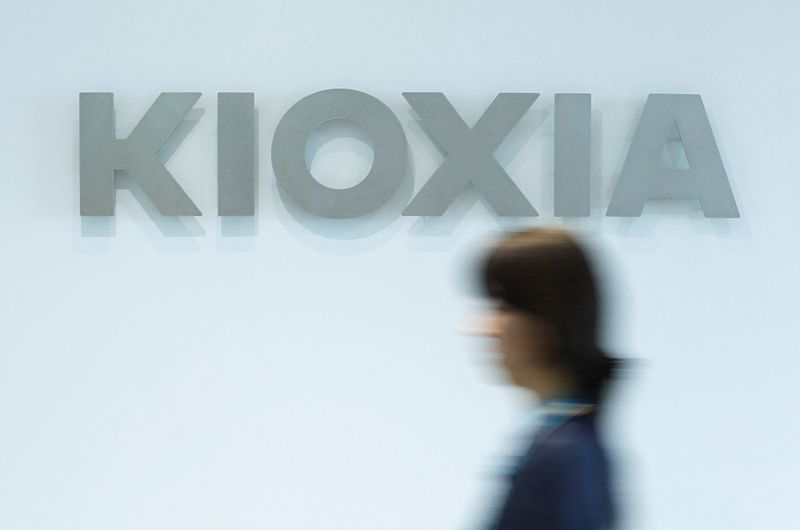

01【具体策】サイバー攻撃に「やられにくい会社」の新・3大常識
| NewsPicks原文

あなたに関係ありそうな理由
賃貸管理でも、会計、入居者対応、修繕手配を支えるシステムやSaaSが止まると、業務と個人情報の両方に影響します。障害時の連絡・判断・復旧の担当を考える材料になります。
概要
企業が使うソフトウェアの脆弱性は、修正プログラムが公開されると同時に攻撃側にも知られ、対応の猶予が短くなっている。記事はPHPの重大な脆弱性について、専門家が公表から15分で攻撃され得ると指摘した例と、修正版の公開当日に悪用が確認された事例を紹介する。担当者の経験だけで障害を切り抜ける運用も限界がある。PagerDutyの調査では、従業員1000人以上の企業の88.7％が重大障害時の対応を特定担当者の経験に依存し、異常把握から調査・復旧まで30分を超える例は65.4％だった。
認証情報の管理にも弱点が残る。JoSsysの調査によると、日経225企業の96.4％で、過去3年間に社員などの認証情報がダークウェブ上に出現していた。Trend Microの調査では、日本のウェブ利用者の84.3％が複数のサービスで同じパスワードを使い回している。さらに警察庁によると、2025年に確認されたランサムウェア感染の6割超はVPN機器が入口だった。会社のネットワークだけでなく、取引先との接続や外部サービスも含めて確認が必要になる。
記事が示す対策は、AIに任せきることではない。ソースコードを継続的にAIで点検して弱点の発見を早め、アラートの妥当性や修正の優先順位は人が判断する。認証では多要素認証やパスキーを広げ、利用者や端末を都度確認するゼロトラストの考え方を取り入れる。取引先が使うSaaSも、認証やアクセス権の基準を点検する。表示コメントには、最新技術の導入だけでなく、経営側のリスク認識や継続する体制が欠かせないという指摘があった。
賃貸管理でも、会計、入居者対応、修繕手配を支えるシステムやSaaSが止まれば、日々の業務と個人情報の両方に影響する。全てを専門家の経験や注意力に頼ると、担当者不在時や深夜の異常に対応しにくい。まず使っているサービスと重要なデータ、停止時に困る業務を洗い出し、誰が連絡を受け、どの権限を止め、どこから復旧するのかを決めておくことが実務に結び付く。攻撃が速くなるほど、平時の棚卸しと訓練が復旧時間を左右する。
コメント欄では、NewsPicks編集部自身が不正アクセスを受けた経験と、その後の対策強化も伝えられていた。
仕事や会話で使える一言
「新しい防御AIを選ぶ前に、守るデータと復旧判断の担当者を決めておきたいですね。」
02キオクシアが初の配当、中間期1株90円 「スーパーサイクル」で24倍の増益予想
| NewsPicks原文

あなたに関係ありそうな理由
半導体の供給や価格は、端末、監視機器、サーバーなどの調達にも関わります。AI需要の強さが増産と納期にどう表れるかを把握できます。
概要
キオクシアは2024年末の上場後、初めて中間配当を実施する。1株当たり90円で、累進配当を基本に、期末配当は中間を上回る方針も示した。背景にあるのは、AIデータセンター向けの需要増を受けた業績の急伸だ。2026年4〜12月期の連結純利益見通しは3兆5578億円で、前年同期の約24倍。これは会社の通期予想ではなく、4〜12月期の見込みである。会社は通期見通しを公表していない。
7〜9月期の売上収益は2兆4800億円で、直前の四半期から7129億円増えた。AIデータセンターで使う高性能メモリーの需要を受け、平均販売単価と出荷量の双方が伸びたという。会社は2027年の生産能力をすでに全量割り当て、2028年も法人向け需要がスマートフォンやPCの需要軟化を吸収し、成長が続くと見込む。ただし会社は通期の利益予想を公表しておらず、記事が紹介する2027年3月期の5兆5800億円はIBESのアナリスト平均予想だ。
増産に向けた体制変更も進む。キオクシア岩手を2027年4月1日に吸収合併する予定で、北上工場の第3製造棟は2029年度中の稼働を目指す。旺盛な注文を売上に変えるには、設備投資だけでなく製造能力の立ち上げ、歩留まり、顧客ごとの製品構成が問われる。AI関連の需要が強い間に供給を整えられるかが、期待先行で終わらないための条件になる。
初配当は、上場後に積み上げた利益を株主へ返す節目である一方、成長投資との配分をどうするかも問われる。表示コメントには、配当より投資を優先してほしいという声や、従業員への還元も含めて考えるべきだという意見があった。賃貸管理でも、入居者や取引先が使う端末、監視機器、サーバーなどの価格や納期に半導体の需給が影響する。今回の数字を見るときは、配当額だけでなく、需要の持続、出荷量、増産計画が実行できているかを続けて確認したい。
コメントは、売上や利益が最高水準となるなかで、高い期待がすでに株価に織り込まれていないか、次の四半期も成長を維持できるかを論点にしていた。初配当は利益増加を株主へ示す動きだが、生産能力が2027年まで割り当て済みの状況では、株主還元と供給能力拡大に必要な資金をどう両立するかも注目される。
仕事や会話で使える一言
「初配当と同時に、増産の計画が予定どおり動いているかも見たいですね。」
03日銀、ＥＴＦ売却ペースを加速 27年1月から年8600億円程度に
| NewsPicks原文
あなたに関係ありそうな理由
日銀の保有資産縮小は金融市場の需給や金利環境を見る材料です。売却の簿価・時価と実際の市場影響を分けて確認できます。
概要
日銀は保有する上場投資信託（ETF）の売却ペースを、2027年1月から速める。簿価で年8600億円程度を売る計画で、従来の年3300億円程度から増える。時価に換算した売却額は年約2兆4600億円となる。株式市場の売買代金に対する比率は、従来の約0.05％から約0.1％へ上がる見込みだ。日銀は市場の状況に応じ、売却を一時的に調整したり停止したりできるとしている。
新しいペースが続けば、保有ETFの売却完了まで約43年かかる計算で、従来のペースで見込んだ約112年から大きく短縮する。日銀は今年1月に売却を始めて以降、市場に大きな影響を与えず進められたことや、株式市場の売買代金が拡大していることを、加速の理由に挙げた。これは売却を始めても影響が出ないと保証するものではなく、今後の市場環境によってはペースを変える余地を残している。
ETFは株価指数に連動する上場商品で、日銀は金融緩和策の一環として大規模に保有してきた。今回の売却は、保有資産を減らす金融政策の正常化をどのように進めるかという論点を含む。売却額を簿価と時価のどちらで捉えるかによって見える規模は変わり、時価との差から生じる利益の扱いにも関心が集まる。表示コメントでは、簿価と時価の差や売却益が国庫に入る点、市場全体への需給影響について異なる見方が出ていた。
株式市場の売買代金に対する比率が小さいからといって、銘柄や時期を問わず影響が同じとは限らない。市場全体の平均値と、実際の売却対象や取引タイミングは分けて考える必要がある。企業や家計にとっても、株価の方向を短期で断定する材料というより、日銀が大株主として持つ資産を長期でどう減らすのかを追うニュースだ。今後は売却実績、売買代金との比率、日銀が調整・停止を使う条件を確認したい。
簿価は保有資産の帳簿上の価額、時価は市場価格で評価した金額で、年8600億円と2兆4600億円は異なる尺度で示されている。約43年という期間も一定ペースで売却を続ける前提の推計で、実際の終了時期を決めたものではない。表示コメントには、ETF保有そのものが市場をゆがめるため日銀は持つべきではないという意見もあった。こうした政策評価は日銀が説明した売却理由とは分けて読む必要がある。
仕事や会話で使える一言
「簿価と時価、売却計画と実際の市場影響を分けて確認したいですね。」
04トヨタと米ウェイモ、27年に日本で自動運転タクシー運行 ＥＶ「ｂＺ４Ｘ」で
| NewsPicks原文
あなたに関係ありそうな理由
地域の移動手段が変われば、駅からの距離や物件周辺の利便性の見方にも関係します。計画と実際の一般運行を分けて追えます。
概要
トヨタ自動車と米ウェイモは、2027年に日本でレベル4の自動運転タクシーを始める計画を発表した。車両にはトヨタの電気自動車「bZ4X」を使い、利用者を少人数から段階的に増やす。運行する都市や台数は公表されていない。車両はトヨタ高岡工場で生産し、同じ工場でウェイモの自動運転用ハードウェアを搭載する計画だ。トヨタの中嶋裕樹副社長は、JPN TAXIより後席と荷室が広い点を車種選定の理由に挙げた。
ウェイモは米国の15都市圏で一般利用者向けサービスを展開し、日本では2025年4月から日本交通の乗務員が同乗する形で試験走行している。今回のトヨタとの計画とは別に、9月には日本交通、配車アプリGOとJaguar I-PACEを用いる構想を発表し、段階的に約100台規模を目指すとしていた。車両や事業者が異なる複数の取り組みが同時に動くため、どの都市で誰が運行を担い、利用者がどう予約するのかは、今後の具体化を待つ必要がある。
レベル4は、定めた条件の範囲でシステムが運転を担う自動運転を指す。サービス開始の計画が出ても、一般利用がすぐ全国で可能になるわけではない。安全基準、遠隔監視、事故時の対応、車両の保守、地域の交通事業者との役割分担が運行の前提となる。ウェイモのドミトリ・ドルゴフ共同CEOは、自社の技術は人間のドライバーより20倍安全に運転できると述べた。これは同社トップの主張であり、独立した安全性評価の結果として報じられた数字ではない。
表示コメントは、bZ4Xを使う量産計画を評価する一方、別の車種を使う既存計画との併存、ソフトウェアや学習データの共通化、トヨタ側の技術部門との連携にも注目していた。賃貸住宅や施設の価値を考える際も、駅からの距離だけでなく、地域で利用できる移動手段の変化が関係する。ただし現時点では運行都市も台数も未公表だ。2027年までに、実証から一般利用へ進む条件と地域交通との関係がどこまで示されるかを見たい。
コメントでは、異なる車両を使う計画の間で、自動運転ソフトウェアや走行データを共有できるか、トヨタの技術部門とどこまで統合するかも論点になった。実証を続けるだけでなく、安全性や運行体制、事故時の責任分担を利用者に説明できるかが、サービス化の条件になる。
仕事や会話で使える一言
「運行する都市と台数が公表されたら、地域交通への影響も考えたいですね。」
05【上場資料分析】アンソロピックの成長戦略が怖すぎる
| NewsPicks原文
あなたに関係ありそうな理由
生成AIの導入判断では、モデル性能だけでなく利用料、設備投資、顧客の継続利用が重要です。成長企業の資金構造を読む材料になります。
概要
Anthropicは10月26日、上場に向けた登録資料S-1を公開した。記事によると、2026年上半期の売上高は163億ドル、従業員数は約5300人。資料が示す急成長の中身として、2026年第3四半期の売上高の80％超が、直近6カ月に公開したモデルから生まれた点が紹介される。特定のモデルを一度当てるだけでなく、更新を続けて顧客の利用を保てるかが事業の鍵になる。記事は映画スタジオのように新作を継続する会社だというアナリストの見立ても紹介するが、これは分析上の比喩である。
開発でAI自身を使う点も資料の特徴だ。Anthropicの説明では、9月に社内で開発したコードベースの90％超をClaudeが自動で書いたという。これは会社が上場資料で示した内容で、全ての開発工程が人なしで行われているという意味ではない。モデルの能力向上が開発効率を押し上げる一方、モデルを作る会社自身が計算資源と電力を大量に必要とする構造も浮かぶ。記事は、成長率だけではなく、設備やモデル開発の投資をどのように回収するかを見る必要を示す。
その資金負担は長期契約にも表れる。記事がS-1を基に紹介するところでは、Google、Amazon、Broadcomなどへの最低支払い契約は合計2656億ドルに達する。一方、顧客からコミットされた売上は108億ドルとされる。契約総額には将来の計算能力を確保する支出が含まれ、顧客が使う量が減ったり、別のモデルへ移ったりすれば、支出と収入の差が重くなる可能性がある。モデル価格の低下や更新競争が続く中で、契約した設備を継続的に売上へ結び付けられるかが問われる。
上場資料の数字は会社の開示、映画スタジオ型という説明はアナリストの仮説として分けて読む必要がある。表示コメントでも、顧客企業のAI投資が実際の利益につながっているか、長期の計算資源契約に見合う利用が続くかが論点だった。AIを使う事業者にとっても、モデルの性能だけではなく、利用料、更新頻度、他社への乗り換えやすさが運用コストを左右する。売上成長と同時に、顧客の継続利用、契約支出、計算資源の利用効率を追うことが、上場後の評価を考える材料になる。
仕事や会話で使える一言
「AIの売上だけでなく、計算資源への支出をどう回収するかも確かめたいですね。」